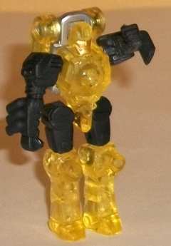
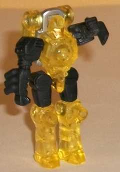
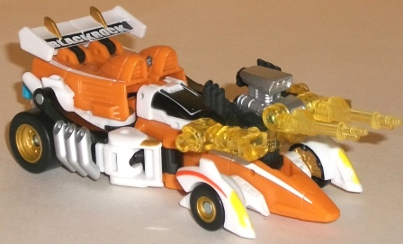
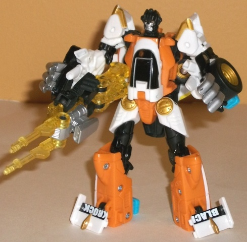
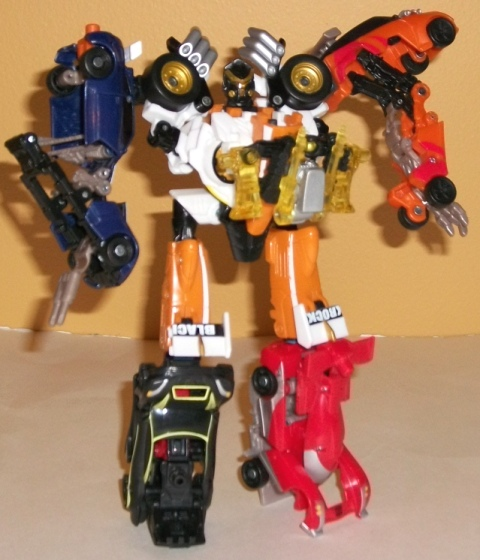

Pinpoint
Pinpoint

Allegiance : Minicon
Difficulty of Transformations : Very Easy
Color Scheme : Transparent yellow, black, and some silver and metallic gold
Individual Rating : 5.8
Leadfoot
w/ Pinpoint
Pinpoint

Allegiance
: Minicon
Difficulty of Transformations
: Very
Easy
Color Scheme
: Transparent yellow,
black, and some silver and metallic gold
Individual Rating
: 5.8
Pinpoint's robot mode
is pretty darned good for a Power Core Combiner Minicon-- or even just
a Minicon in general, really. His proportions are very humanoid-- and given
his square chest and the detailing on his arms (like the exhaust pipes)
and legs, he looks VERY much like one of the old G1 Powermasters. Just,
y'know, with articulation. (He can move at the elbows, hips, and knees,
and the first two of those are on ball joints.) To add to this look, he
has a big engine on his back (which becomes important in his vehicle weapon
mode). He also has twin shoulder guns which technically are supposed to
be flipped behind his back in this mode, but they can each move individually,
and look pretty good posed over his shoulders. (Even folded back, they
look kinda like a jetpack.) Unfortunately, because of his fairly small
feet and his back-heavyness caused by the engine block, he is a bit unstable
in robot mode. As for his color scheme, yellow and black are pretty good
contrast colors, and the yellow goes well with Leadfoot's general color
scheme. The silver on the engine helps to give him a bit more color variety,
but the gold paint on his robot face is rather questionable-- it's way
too close in coloration to the transparent yellow, so it's a bit hard to
make out on this small of a toy.
Pinpoint's vehicle weapon
mode is probably his stronger mode outside of his robot mode. Yeah it's
just his robot mode in a yoga position, but the engine block on the top
and the guns pointed forward takes your attention away from the legs folded
out on the sides, and the exhaust pipes on the robot arms also help with
the "engine" look in this mode. Pinpoint's robot weapon mode is admittedly
very weak, It's basically just his robot mode with the guns pointed up.
(The larger robot holds him by the Powerlinx port on his knees.) Ick.
Pinpoint's chest armor
mode is very close to his vehicle weapon mode, but with the guns stored
away. It actually works fairly good, though the legs seem a bit more obvious
in this mode, due to the fact that the black upper legs are facing up in
this configuration instead of towards the back like in vehicle weapon mode.
Definitely one of the better chest armor modes.
Pinpoint has a very
lame robot weapon mode, but his other modes are fairly solid for a Power
Core Minicon, even if they're also very simplistic. One of the better Minicons
for this line.
 Leadfoot
Leadfoot



Allegiance
: Autobot
Difficulty of Vehicle/Robot Transformation
:
Medium
Difficulty of Torso Transformation
:
Medium
Color Scheme
: Light orange, white,
black, and some light sky blue, silver, bright yellow, dark orange, and
metallic gold
Individual Rating
: 8.4
Leadfoot's alternate
mode is, appropriately, a race car. It's a bit more futuristic-looking
than most of the other Power Core Combiners, as the designers definitely
took some liberties when establishing his overall look. The oversized exhaust
pipes on the side, the "windowed" cockpit, the front wheels sticking out
from the front nosecone much further than they realistically would, the
back end being a bit more bulky... Whether you like this look depends entirely
on how realistic you like your Transformers' alternate modes. Me, I don't
mind it in generally, though I still feel the back third or so is just
too bulky for a race car. All four of the light blue combiner ports stick
out the rear end-- on one hand, it's a bit of an eyesore if you look at
Leadfoot from a side view, but at least they're all in the same place and
out of the way of the rest of the mode. (If they weren't that light blue,
I'd be tempted to say they're rocket boosters, but my mind can't quite
stretch THAT far with the current color on them.) The general color scheme
of white, black, and light orange works quite well for a race car, particularly
for an Autobot race car. The creamsicle orange complements the white pretty
well, while the black helps give the overall scheme a nice dark color.
The accent colors are a mixed bag. On one hand, the gold used for the tire
hubcas and a few other small bits looks very nice, but the bright yellow
on a few areas like the headlights is way too close to the white to stand
out. The overall structure of the mode is a bit too fragmented and bulky
to accomodate the stripes along the sides of Leadfoot, so they don't really
come together with any cohesiveness. (The "Blackrock" on the spoiler is
a nice nod to the G1 comics, though.) When it comes to the mold detailing,
Leadfoot suffers from the same problems a few other Power Core Combiners
like Huffer have-- some bits of him are a bit underdetailed (even considering
it's a race car), with only the barest essentials detailed, while other
places, like many of the robot parts, are incredibly detailed with pistons,
pipes, and all that. It doesn't mesh very well visually.
Leadfoot's robot mode
is a pretty interesting design, with some good points and some bad. For
one, I love how the exhaust pipes rotate around to become his fingers,
the cockpit works nicely for a chest, and the spoiler halves serve as pretty
good feet. The backpack made out of the front third or so of his vehicle
mode sits behind his back and out of the way of most of his movement, with
the folded-in wheels on said backpack framing the main body nicely. On
the other hand, his head is way too small proportionally, and doesn't look
all that hot regardless-- he's another one of the Power Core Combiners
that has too many details around his mouth where I can't tell exactly what
kind of mouth he's supposed to have. (The light piping works extraordinary
well on the eyes, though.) His lower arms are also entirely too large when
compared to his upper arms and shoulders, with not only his large fingers
but also a wheel and a combiner port sticking out the back end on each
of those lower arms. Meanwhile, his upper arms are so short as to practically
be nonexistent. As for articulation, Leadfoot can move at the neck, shoulders
(at three points), elbows (at two points), hips (at three points), and
knees. However, his upper legs due have an odd diagonal point of movement
about halfway between the hips and knees, and can lead to some odd poses
if you're trying to put one leg up on an elevated ledge above the other
or a similar pose.
Torso mode looks mighty
nice, and is probably the strongest of Leadfoot's three modes. I'll first
admit that the upper legs are fairly weak-- they're obviously just his
robot legs but moved a bit farther from the waist in a rather odd manner--
but the rest of the mode is put together mighty nicely. The backpack from
robot mode makes for a very nice-looking, symmetrical chest, and the robot
arms frame it in rather nice way with the exhaust pipes and wheels coming
over the shoulders. I LOVE his headsculpt in this mode, which reminds me
a bit of the G2 Cyberjets with just one bit emotionless three-pointed visor
for a face. (The good light piping continues over to this mode, too.) He
also has a flip-out Powerlinx port right in the middle of his chest, so
a Minicon in chest armor mode will fight right in here. As for movement
in this mode, Leadfoot can move at the neck, hips (at three points), knees
(at two points), and shoulders (at two points). He also has a point of
movement at the "regular" robot knee, but that looks odd if you move it
in this configuration.
Leadfoot is a slightly
above-average Power Core Combiner. His vehicle mode, while rather kibble-free,
is a bit too bulky for a race car, and his robot mode has some proportions
problems, like the tiny head and ridiculously oversized lower arms. His
torso mode is the highlight of the figure though, and his color scheme
is fairly good too, with plenty of paint apps to keep him from getting
boring. Plus, everything tabs into place securely in every mode-- something
that's not as prevalent as it should be in this line.
Reviews by Beastbot